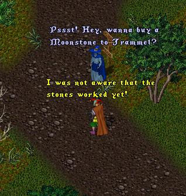
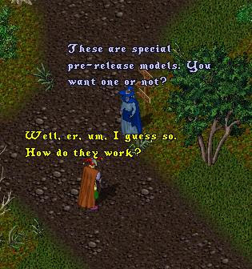
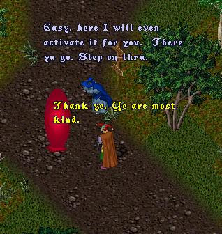
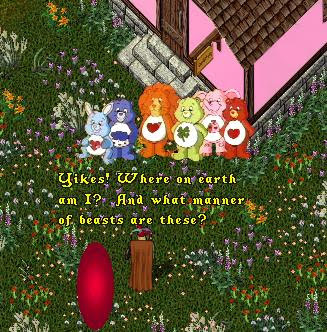
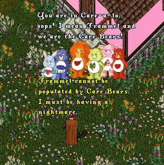
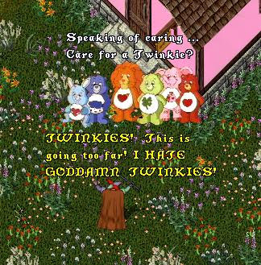
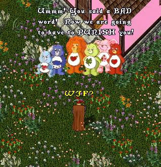
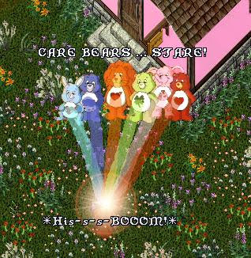
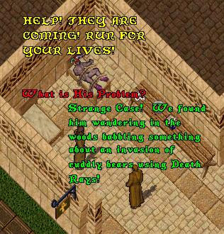

Episode 98: ImaNewbie does Trammel?. This episode, I just had to take a run at all the hoopla surrounding the upcoming addition of Trammel, the new no-PvP zone. With the boards full of one side taunting the others by calling it "Care Bear Land", and calling the people who will inhabit it "Twinkies" I just started having wierd dreams I had to get rid of.
As this episode opens we find ImaNewbie
wandering down a trail minding his own business
when he hears a "Ps-s-st" from a suspicious
character standing under a road sign.



Throwing all caution to the winds, ImaNewbie steps
bodly forth to go "where no man has ever gone
before", the New Lands of Trammel!





Later that day, at the hospital in Magincia, two
healers discuss the diagnosis of a distraut
patient in their care.
